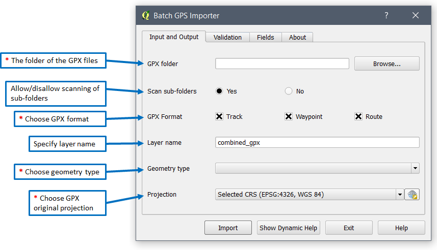
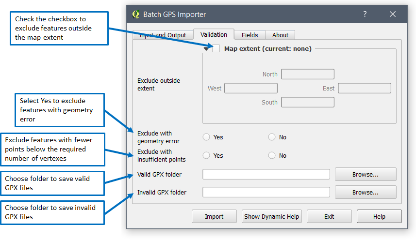
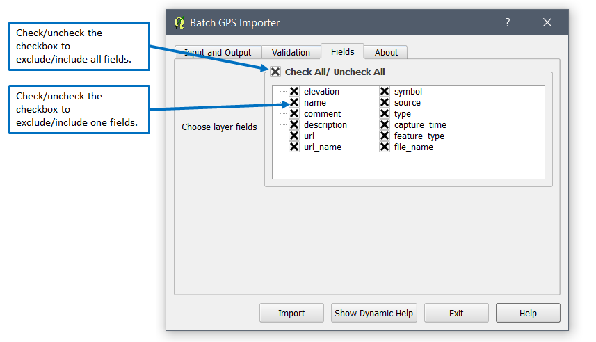
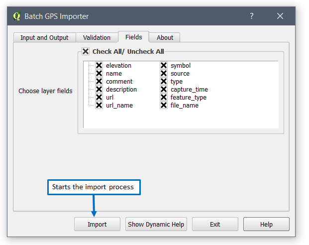
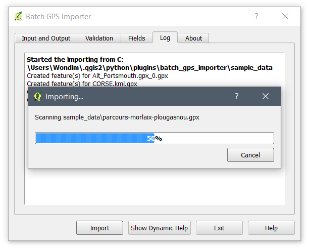
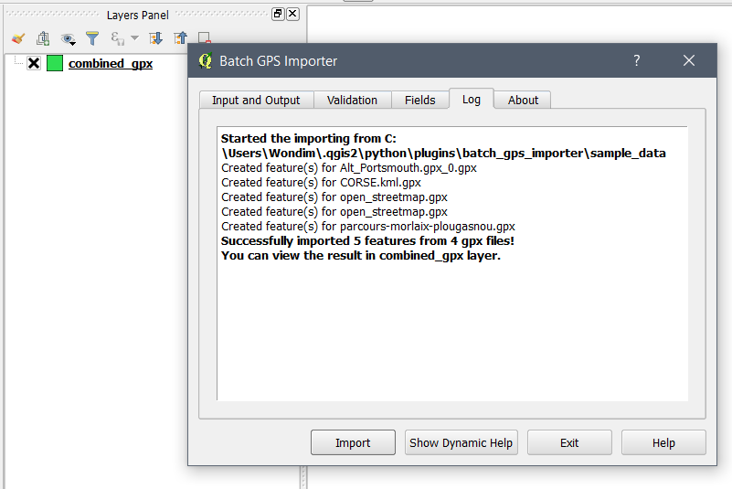
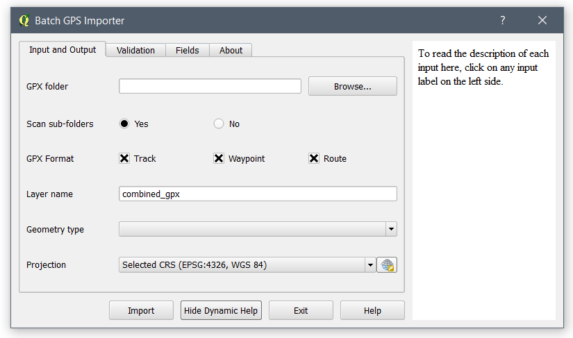
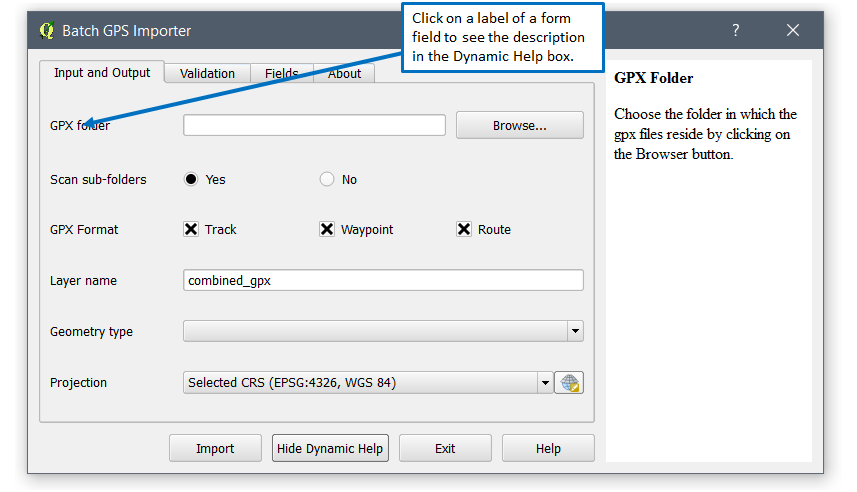

The Input and Output tab page contains all the necessary information required to create a combined gpx layer from gpx files. The image below illustrates the form fields of the tab. In the image, the indicated fields that have astrix are required fields.
The sub-topics below explains each form fields of the tab page.
Choose the folder in which the gpx files reside by clicking on the Browser button.
Click on Yes to import gpx files in sub-folders or No to only import from the currently selected folder.
Choose one GPX format which could be track, waypoint, or route. This is determined during the GPS data collection.
Specify a name for the output layer. If not specified, the default layer will be used.
Choose the geometry type of the output Layer. It can be Polygon, Line or Point. If you choose Polygon and Line, only the first attributes of each feature will be used. For Point geometry type, all point attributes are captured.
Choose the coordinate reference system used when collecting the GPS points. This will also be used as the layer projection.
The Validation tab enables you to filter out features with issues and map extent. It enables you to also save both gpx files with valid and invalid features based on the criteria you have supplied. The image below illustrates all the form fields of the Validation tab.
The sub-topics below explains each form fields of the tab page.
When this extent box is activated, it automatically captures the extent of the map. When you click on the Import button, this extent will be used to crop other features outside the visible map extent.
Choose to exclude or include features with geometry error. If you click Yes, features with geometry error will be excluded and the error message and the gpx files will be shown in the log tab.
Exclude or include GPX features with insufficient point that is not enough to create a valid geometry. This filter is applicable for lines and polygons. For line, the minimum points required are 2. For polygon, the minimum required points are 3.
If you click on the Yes radio button, features with points below the required number will be excluded. If you click on the No button, features with points below the required number will be included. This could lead to the presence features with no visible geometry.
If you would like to filter out and keep the valid gpx files used in the output layer. Select a folder. If not specified, the valid gpx files will not be copied.
If you would like to identify invalid gpx files that are not used in the output layer. Select a folder. If not specified, the invalid gpx files will not be copied.
The Fields tab page contains the option to include and exclude fields that are extracted from the GPX file and additional fields added by Batch GPS Importer.
You can include or exclude layer fields that will be added in the map. If you remove the check of a field, it will not be included in the layer with also leads to the loss of information under that field. The image below shows how you can include and exclude fields.
By default, the id column will be added and it can't be removed.
All fields except the feature_type and file_name are extracted from the gpx file.
Once you finish specifying the required form fields, you can start importing the GPX features by clicking on the Import button as shown in the image below.
Once you click on the import button, you will see a progress dialog and the Log tab page appearing and showing the import progress as shown below.
Once complete, you will see a success message and a new layer added to the Layers panel as shown in the image below.
Batch GPS Importer has included a dynamic help functionality in which you can view the description of each form field. To activate it, click on the Show Dynamic Help button located at the bottom. This will show the Dynamic Help box on the right side of the dialog as shown below.
Click on the label of each form fields when you want to read more description about the field as shown below.
